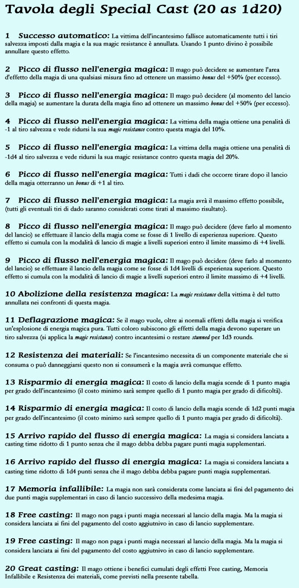
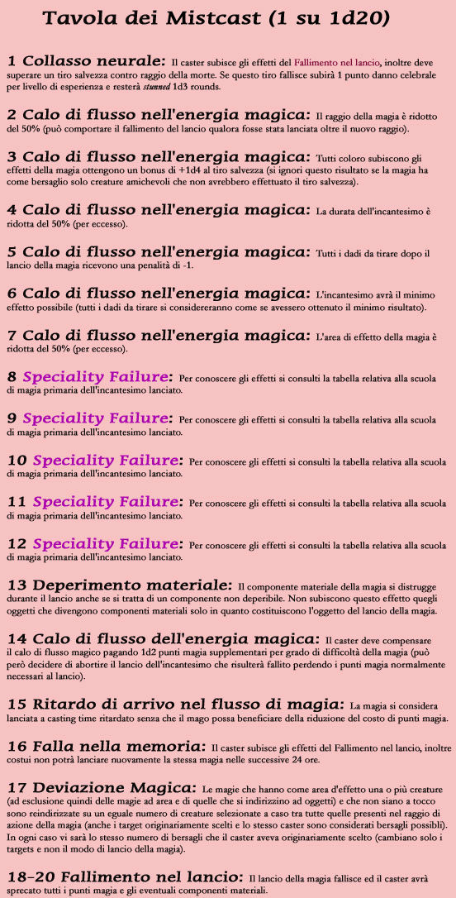
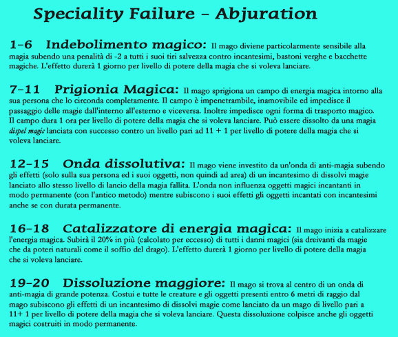
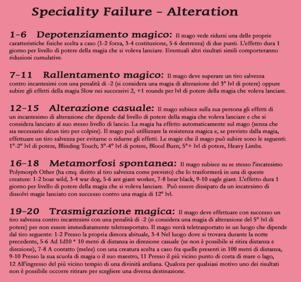
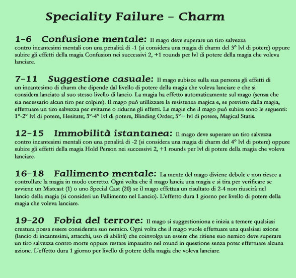
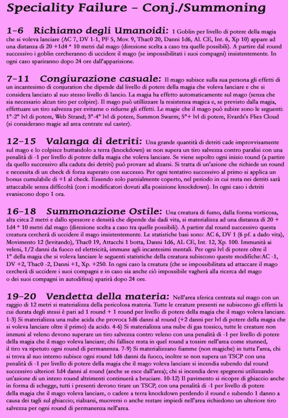
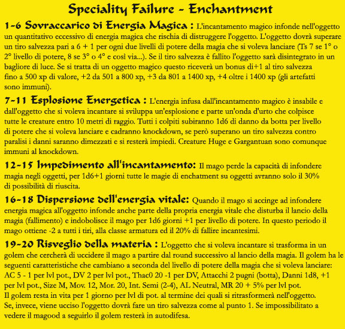
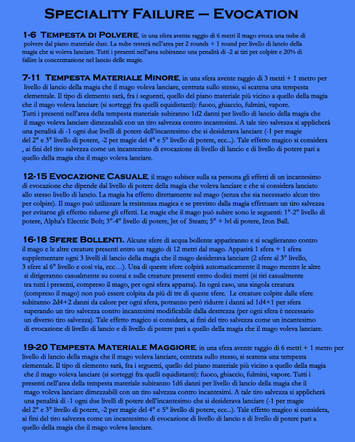
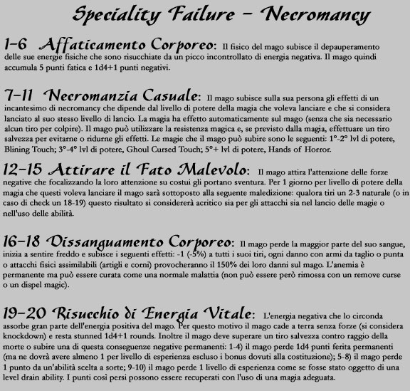

Special Cast e Miss Cast
Anche nel lancio delle magie dei maghi, come nel combattimento con le armi, è possibile il verificarsi di eventi imprevedibili che possono incidere, anche notevolmente sulla situazione di gioco. Sul lancio delle magie non influiscono solo le capacità dei maghi ma anche i flussi di energia magica richiamati con le formule che in alcune occasioni risultano difficili od impossibili da controllare. Per questo motivo ogni volta che un mago lancia una magia (come prima azione da verificare dopo la fine della fase delle intenzioni) occorre che tiri 1d20. Devono tirare questo dado solo coloro utilizzano gli incantesimi dei maghi (quindi maghi e cantori) essendo escluse le magie clericali, il lancio di magie da pergamene, i cantrip ed il lancio di magie effettuato attraverso l'uso di poteri naturali (natural spell like ability).
Se il risultato del tiro è pari a 20 sarà riuscito in un lancio sorprendente che non avrebbe potuto altrimenti, si sarà verificato uno Special Cast. Tirare dunque sulla tabella seguente per verificarne gli effetti. Si noti che se il risultato da luogo ad un effetto oggettivamente non possibile (indipendentemente dalla sua efficacia) il tiro deve essere ripetuto.

Se il risultato del tiro è pari ad 1 il mago non è riuscito nel controllo dei flussi di magia oppure ha sbagliato qualche formula potendo dare vita ad un risultato in alcuni casi incredibile, si sarà verificato un Misscast. Tirare dunque sulla tabella seguente per verificarne gli effetti. Si noti che se il risultato da luogo ad un effetto oggettivamente non possibile (indipendentemente dalla sua efficacia) il tiro deve essere ripetuto.

Qualora si sia tirato un risultato da 8 a 12 nella tabella dei Mistcast, si sarà verificato un evento raro e caratteristico ossia un fallimento specialistico. Gli effetti del Mistcast saranno quindi condizionati dalla scuola primaria della magia che il mago voleva lanciare. Per verificare cose è accaduto tirare nella tabella corrispondente a questa scuola di magia.
Si noti che in caso di Specialty Failure si verica sempre e comunque anche l'effetto di Fallimento nel lancio.






